대표 음식 15종
사진은 Wikimedia Commons에 공개된 실제 촬영본이며, 저작자와 라이선스를 각 사진 아래에 적었습니다. 촬영한 식당·지역·조리법에 따라 실제 모습은 다를 수 있습니다. 맞는 사진을 아직 찾지 못한 2곳은 비워 두었습니다.
-

사진: Xavier Caré · CC BY-SA 3.0 · Wikimedia Commons 보르시치Борщ
가정과 지역에 따라 고기·채식·버섯 등이 달라지는 전통 식문화. 2022년 UNESCO 긴급보호목록의 대상은 '우크라이나 보르시치 조리문화'이지 음식의 독점 특허가 아님.
-
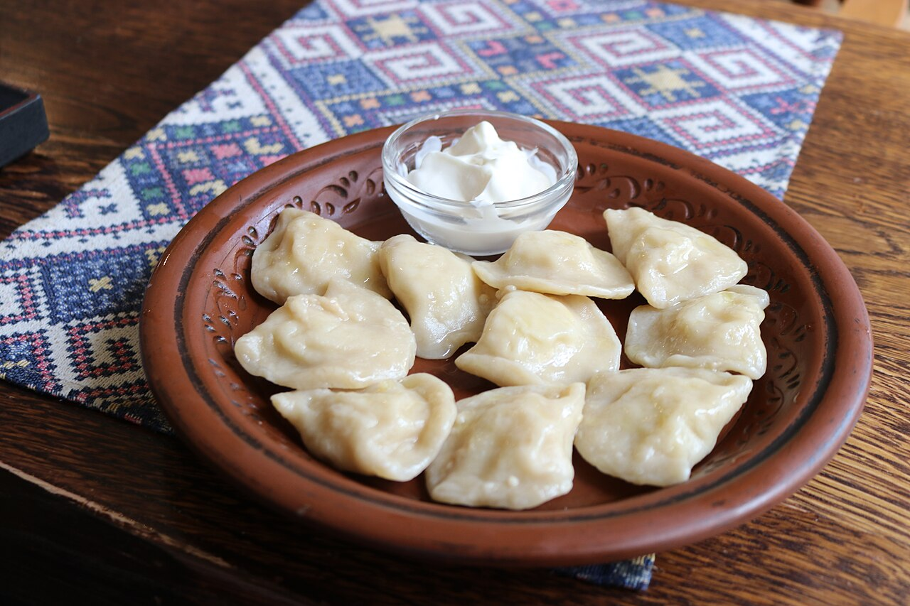
사진: DemieK07 · CC BY-SA 4.0 · Wikimedia Commons 바레니키Вареники
감자·트보로그 치즈 소와 달콤한 과일소가 공존하는 만두. 가족식사·명절에서 세대 간 조리법이 전승됨.
-
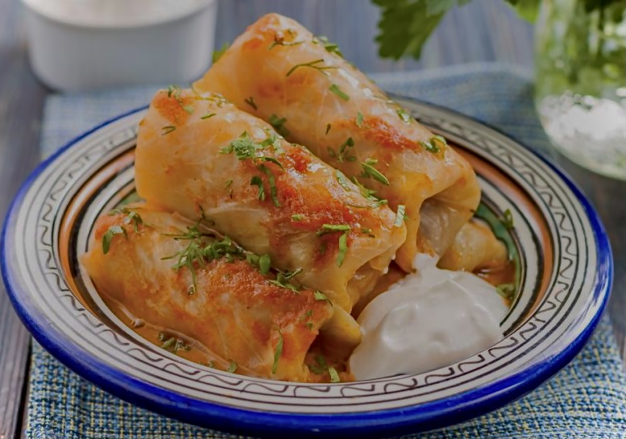
사진: Stefaniafleur · CC BY-SA 4.0 · Wikimedia Commons 홀루브치Голубці
주변 동유럽 국가들과 공유하지만 지역마다 쌀·메밀·야채소 조합이 다르다.
-
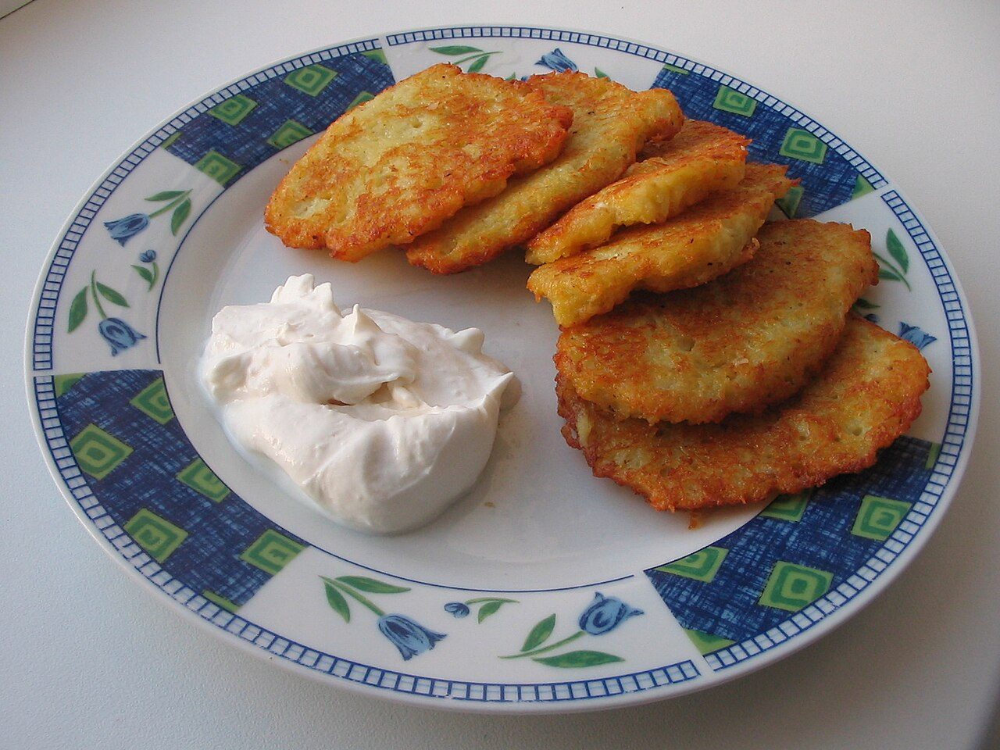
사진: Kagor at Ukrainian Wikipedia · CC BY-SA 3.0 · Wikimedia Commons 데루니Деруни
감자 경작과 연결된 서부·북부의 대중적인 가정식. 벨라루스 드라니키와 유사한 조리문화권.
-
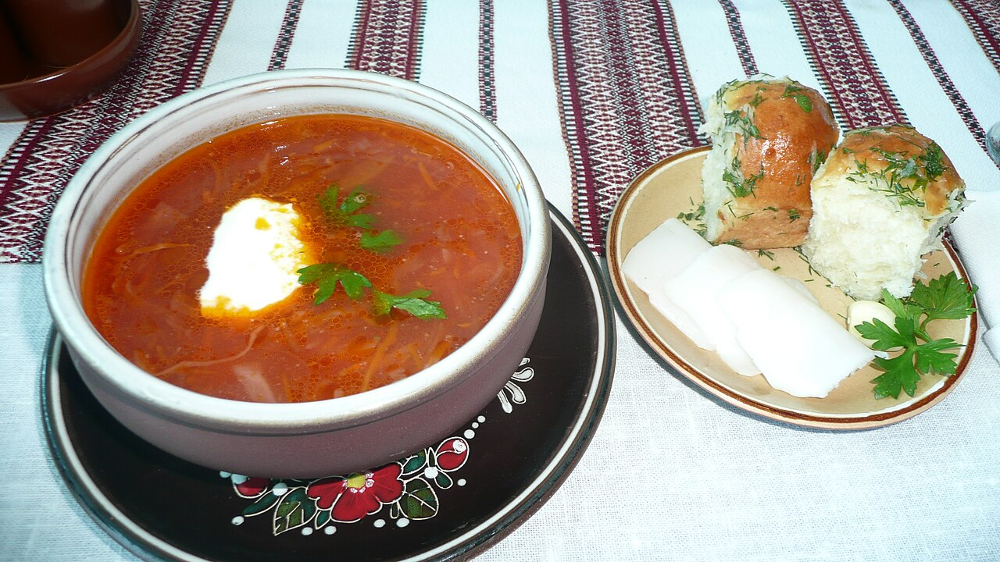
사진: Brücke-Osteuropa · Public domain · Wikimedia Commons 팜푸슈키Пампушки
보르시치 옆에 내는 작은 둥근 빵; 마늘·기름을 바르는 변형이 대표적.
-
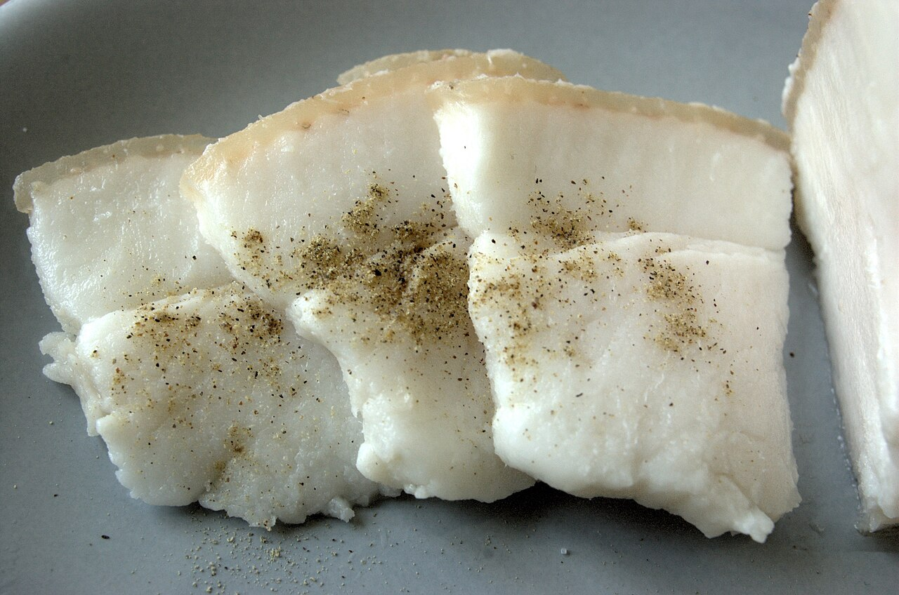
사진: Roland Geider (Ogre) · Public domain · Wikimedia Commons 살로Сало
보존식 전통과 농촌 식생활의 상징적 음식으로 다양한 지역 양념법 존재.
-
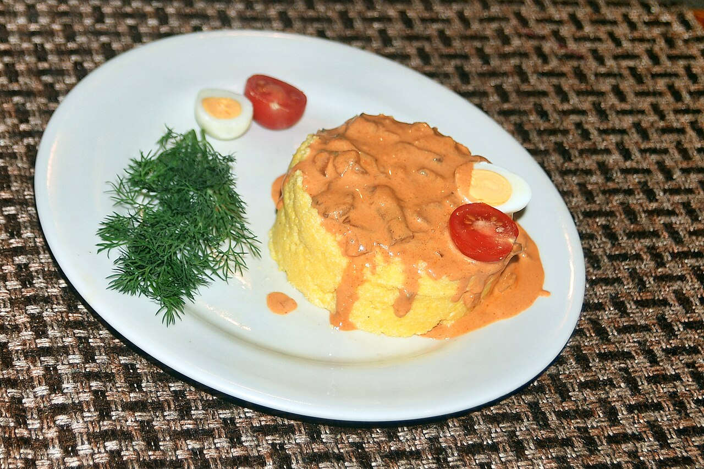
사진: Galvm · CC BY-SA 4.0 · Wikimedia Commons 바노시Банош
카르파티아 목축문화의 치즈와 옥수수 식재료가 만나는 산간 음식.
-
사진 준비 중
맞는 사진을 구하는 대로 채웁니다. 다른 사진으로 대신하지 않습니다. 보그라치Бограч
헝가리계 카르파티아 문화권과 공유하는 커다란 솥 요리. 전국 고유 기원이라고 단정하지 않음.
-
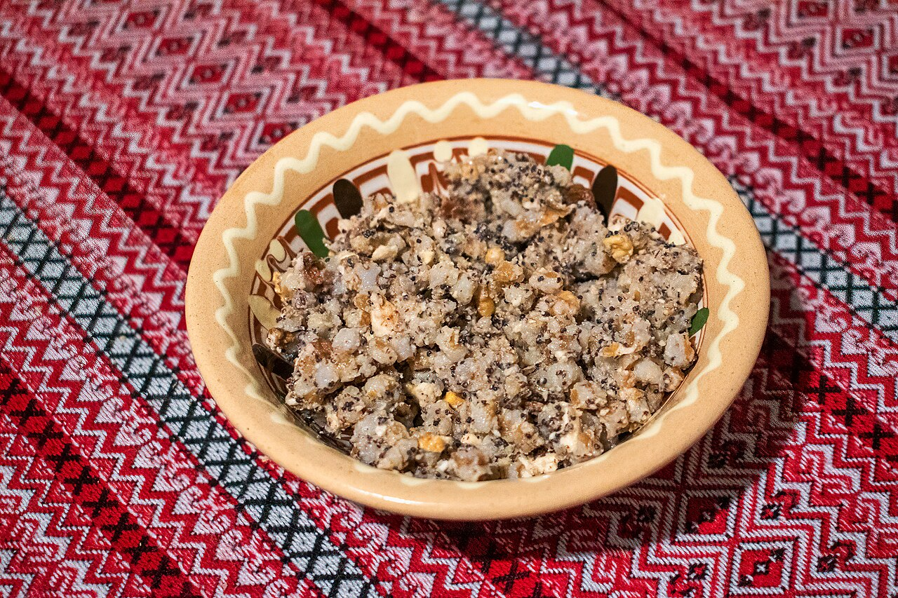
사진: Віщун · CC BY-SA 4.0 · Wikimedia Commons 쿠티아Кутя
크리스마스이브·추모와 연결되는 곡물 의례음식. 가족·종파에 따라 날짜와 조리법 변형.
-
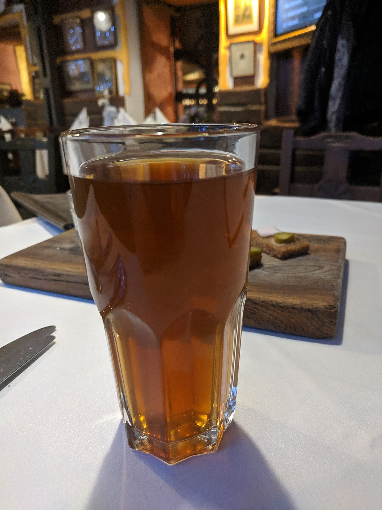
사진: Ijon · CC BY-SA 4.0 · Wikimedia Commons 우즈바르Узвар
말린 과일을 끓이거나 우려내는 명절 음료로 쿠티아와 같이 놓기도 함.
-
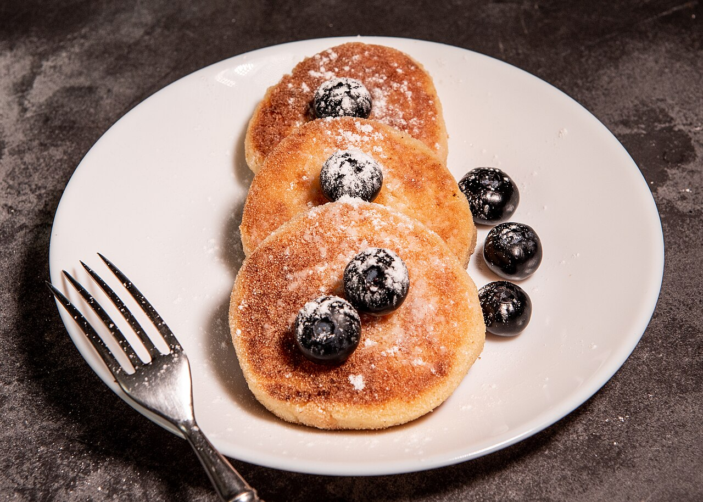
사진: Evil linnka · CC BY-SA 4.0 · Wikimedia Commons 시르니키Сирники
농가 유제품을 활용한 팬케이크 계열. 벨라루스·러시아에도 널리 퍼진 동유럽 공동 식문화.
-
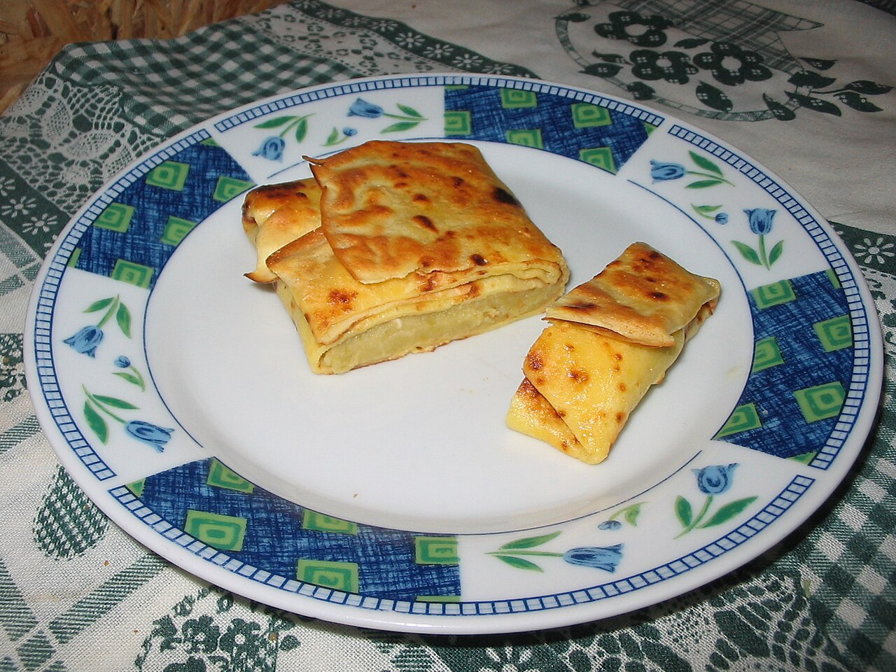
사진: Kagor · CC BY-SA 3.0 · Wikimedia Commons 날리스니키Налисники
속을 채워 접거나 말아 구운 얇은 크레프; 축하식이나 가정식으로 다양.
-
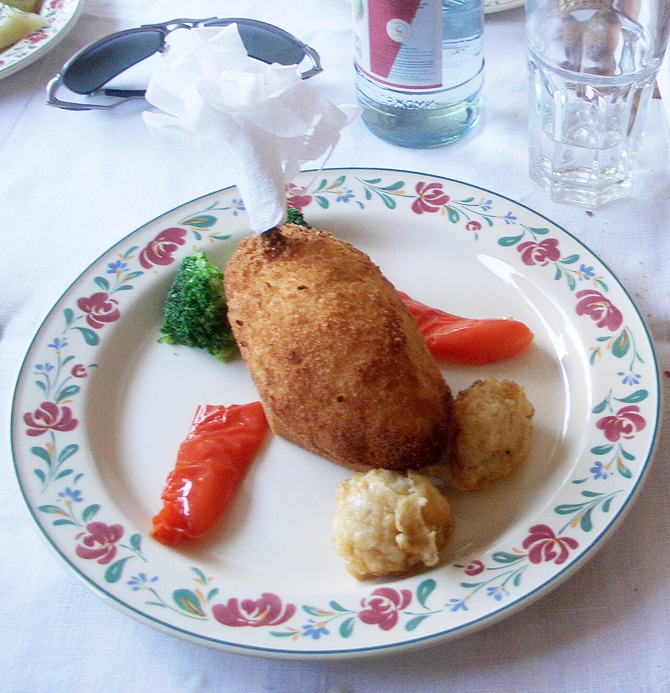
사진: Giles Thomas @ Flickr (original image) ; Off-shell (reprocessed version) · CC BY-SA 2.0 · Wikimedia Commons 키이우식 커틀릿Котлета по-київськи
국제적으로 알려진 치킨 키이우. 발생사에는 다양한 해석이 있어 특정 도시·식당의 단독 발명으로 단정하지 않기.
-
사진 준비 중
맞는 사진을 구하는 대로 채웁니다. 다른 사진으로 대신하지 않습니다. 플랴초크Пляцок
폴란드-우크라이나 접경 제과문화에서 볼 수 있는 여러 층 케이크의 지역명.
-
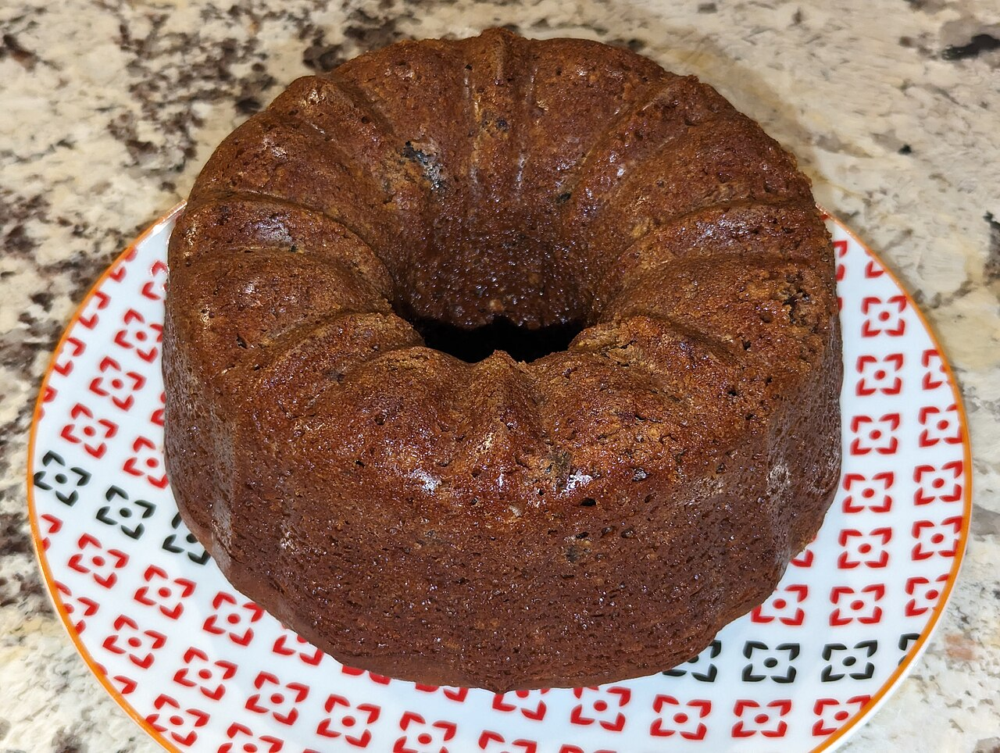
사진: Amakuha · CC BY-SA 4.0 · Wikimedia Commons 메디우니크Медівник
꿀을 사용하는 디저트로 명절·가정 제과문화와 연결. 메도비크와 유사하나 형태와 이름은 변형.
함께 알아두면 좋은 점
- 알레르기·식단: 성분과 조리법은 식당·가정마다 달라 일반화할 수 없습니다. 알레르기나 식단 제한이 있다면 주문 전에 직접 확인하세요.